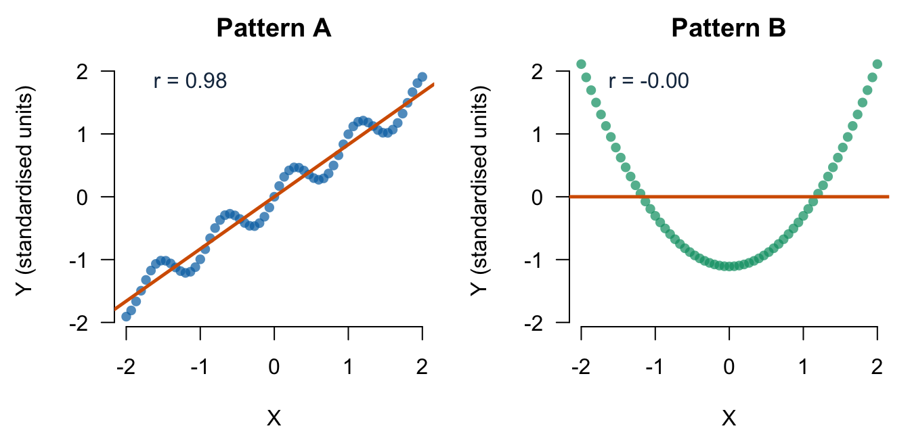
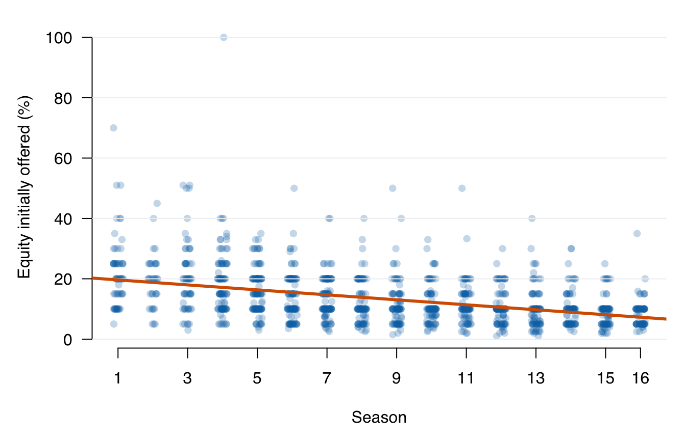

Lecture 5: Joint random variables, covariance, and correlation
- define a pair of random variables on one sample space;
- read a joint PMF and recover marginal and conditional distributions;
- derive covariance from expected cross-deviations;
- explain how correlation standardises covariance;
- separate linear association from independence, causality, and importance.
Before class
Video preparation
Watch
Joint PMFs and the
Expected Value Rule,
Covariance, and
The Correlation
Coefficient. Be ready to state what a joint PMF records, what covariance
averages, and how correlation standardises covariance. All links are also
listed in the External Video Guide.
If ordered pairs, products, or standardisation are unfamiliar, review Mathematics Refresher: products, indices, and z-scores.
In the uniform record-selection experiment, one realised outcome \(\omega\) is a complete pitch record. Define:
\[ X(\omega)= \begin{cases} 1,&\text{on-air deal},\\ 0,&\text{no on-air deal}, \end{cases} \qquad Y(\omega)= \begin{cases} 1,&\text{Season 9--16},\\ 0,&\text{Season 1--8}. \end{cases} \]
The pair \((X,Y)\) maps every outcome to one of four possible ordered pairs:
\[ \mathcal{X}\times\mathcal{Y} =\{(0,0),(0,1),(1,0),(1,1)\}. \]
Two separate marginal distributions do not tell us how values are paired. The joint distribution does.
In class
The joint probability mass function
MIT explanation (review): 06.7 Joint PMFs and the Expected Value Rule.
For discrete random variables \(X\) and \(Y\), the joint PMF is
\[ p_{X,Y}(x,y)=P(X=x,Y=y). \]
It must be non-negative and sum to 1 over every possible pair.
## Late_period
## Deal 0 1
## 0 330 229
## 1 377 505## Late_period
## Deal 0 1
## 0 0.229 0.159
## 1 0.262 0.350## [1] 1Recovering marginal PMFs
Sum over the values of the other variable:
\[ p_X(x)=\sum_y p_{X,Y}(x,y), \qquad p_Y(y)=\sum_x p_{X,Y}(x,y). \]
## 0 1
## 0.3879251 0.6120749## 0 1
## 0.4906315 0.5093685Recovering conditional PMFs
MIT explanation (review): 07.2 Conditional PMFs.
For \(p_Y(y)>0\),
\[ p_{X\mid Y}(x\mid y)= \frac{p_{X,Y}(x,y)}{p_Y(y)}. \]
The probability \(p_{X\mid Y}(1\mid1)\) is the late-season deal proportion \(P(X=1\mid Y=1)=505/734\).
## Late_period
## Deal 0 1
## 0 0.467 0.312
## 1 0.533 0.688The columns each sum to 1 because each column is a conditional PMF of \(X\) within a fixed value of \(Y\).
Independence in a joint distribution
MIT explanations (review): 03.3 Independence of Two Events and 07.4 Independence of Random Variables.
Events \(A\) and \(B\) are independent when \(P(A\cap B)=P(A)P(B)\). Equivalently, when \(P(B)>0\), \(P(A\mid B)=P(A)\). Positive-probability disjoint events are not independent: observing one makes the other impossible.
Discrete random variables \(X\) and \(Y\) are independent if
\[ p_{X,Y}(x,y)=p_X(x)p_Y(y) \]
for every pair \((x,y)\). In a table, this equality must hold in every cell, for every possible combination of values.
observed_joint_11 <- mean(X == 1 & Y == 1)
independent_joint_11 <- mean(X == 1) * mean(Y == 1)
c(observed_joint_11 = observed_joint_11,
independent_joint_11 = independent_joint_11)## observed_joint_11 independent_joint_11
## 0.3504511 0.3117717Checking one combination of values is not enough to establish independence. A mismatch in even one cell is enough to show dependence. Here, the mismatch in the \((1,1)\) cell shows that the empirical variables are not independent.
Covariance comes from expectation
MIT explanation (review): 12.5 Covariance.
Lecture 4 defined variance as an expected squared deviation:
\[ \operatorname{Var}(X)=E[(X-E[X])^2]. \]
Covariance uses the same idea for two variables. Let \(\mu_X=E[X]\) and \(\mu_Y=E[Y]\). Then
\[ \operatorname{Cov}(X,Y) =E[(X-\mu_X)(Y-\mu_Y)]. \]
Interpret one product of deviations:
- if both values are above their means, the product is positive;
- if both are below their means, the product is also positive;
- if one is above and the other below, the product is negative.
The expectation averages those signed products over the joint distribution. Expanding the product gives the computational identity:
\[ \operatorname{Cov}(X,Y)=E[XY]-E[X]E[Y]. \]
E_X <- mean(X)
E_Y <- mean(Y)
E_XY <- mean(X * Y)
c(
E_X = E_X,
E_Y = E_Y,
E_XY = E_XY,
covariance_from_moments = E_XY - E_X * E_Y
)## E_X E_Y E_XY
## 0.61207495 0.50936849 0.35045108
## covariance_from_moments
## 0.03867938Covariance has product units. If \(X\) is measured in dollars and \(Y\) in years, covariance is in dollar-years. Its sign is interpretable, but its magnitude changes when either measurement unit changes.
Correlation standardises covariance
MIT explanations (review): 12.8 The Correlation Coefficient and 12.10 Interpreting the Correlation Coefficient.
For variables whose standard deviations are not zero,
\[ \rho_{XY} =\frac{\operatorname{Cov}(X,Y)} {\operatorname{SD}(X)\operatorname{SD}(Y)}, \qquad -1\le\rho_{XY}\le1. \]
Correlation has no units. Its sign gives the direction of linear association, and its magnitude measures the strength of linear association.
cov_xy <- mean((X - mean(X)) * (Y - mean(Y)))
rho_xy <- cov_xy / (sqrt(mean((X - mean(X))^2)) *
sqrt(mean((Y - mean(Y))^2)))
c(from_definition = rho_xy,
from_R = cor(X, Y))## from_definition from_R
## 0.158785 0.158785A correlation near zero can coexist with a strong curved relationship. A correlation near 1 or -1 does not establish causality.

Each point is one \((x,y)\) pair. The horizontal axis gives \(X\), and the vertical axis gives \(Y\) in standardised units so the panels can be compared. The orange line is the fitted linear summary. Pattern A follows an almost straight rising path, so its correlation is close to 1. Pattern B has a clear U-shaped relationship, but its fitted line is flat and its correlation is close to 0. Correlation measures only linear association; it can miss a strong relationship with another shape.
Sample covariance and sample correlation
For observed pairs \((x_i,y_i)\), the usual sample covariance is
\[ s_{XY}=\frac{1}{n-1}\sum_{i=1}^{n} (x_i-\bar{x})(y_i-\bar{y}), \]
and the sample correlation is
\[ r_{XY}=\frac{s_{XY}}{s_Xs_Y}. \]
These are sample statistics. Under a model and sampling design, they may be used to estimate population quantities \(\operatorname{Cov}(X,Y)\) and \(\rho_{XY}\).
Inspect first, summarise second
For two quantitative variables, begin with a scatterplot. Treating season as an equally spaced time index:

Each point represents one pitch: season is read horizontally and initially offered equity in percentage points vertically. Horizontal jitter only reveals overlapping points; it does not change the recorded season. The orange line is the fitted linear summary. Its downward direction describes negative linear co-movement, while the large vertical spread shows why the line does not predict every pitch closely.
c(
season_with_equity_offered =
cor(sharks$season, sharks$equity_offered_pct),
equity_offered_with_deal =
cor(sharks$equity_offered_pct, sharks$deal_on_show)
)## season_with_equity_offered equity_offered_with_deal
## -0.4157650 -0.1128703Season and initially offered equity have a moderate negative linear association (\(r\approx-0.42\)). Offered equity and the 0/1 deal indicator have a weak negative association (\(r\approx-0.11\)). With a binary variable, ordinary Pearson correlation is also called point-biserial correlation.
Why the association may mislead
Three patterns coexist:
- later seasons have higher recorded deal proportions;
- later seasons have lower initial equity offers;
- deal records have slightly lower initial equity offers on average.
The marginal offered-equity/deal association may therefore partly reflect differences between seasons. Offered equity was not randomly assigned, and the file does not document a causal intervention. Correlation alone does not establish causation, independence, or practical importance.
After class
Retrieval
- What information does a joint PMF contain that two marginal PMFs do not?
- How do you recover a marginal PMF from a joint PMF?
- Why can covariance change when units change?
- Why does independence imply zero covariance?
- Why does zero correlation not imply independence?
Check your answers
- It records how values of the two variables occur together.
- Sum the joint PMF over every value of the other variable.
- Covariance has product units, so rescaling either variable rescales the covariance.
- Independence gives \(E[XY]=E[X]E[Y]\), hence zero covariance for the variables considered in this course.
- Correlation measures linear association; dependent variables can have zero linear association.
Practice
Consider this joint PMF:
| \(Y=0\) | \(Y=1\) | |
|---|---|---|
| \(X=0\) | 0.30 | 0.20 |
| \(X=1\) | 0.10 | 0.40 |
- Find the marginal PMFs of \(X\) and \(Y\).
- Are \(X\) and \(Y\) independent?
- Calculate \(\operatorname{Cov}(X,Y)\) and interpret its sign.
- Calculate \(P(X=1\mid Y=1)\) and compare it with \(P(X=1)\).
- Define \(Z=100X\). Calculate \(\operatorname{Cov}(Z,Y)\) and state what happens to \(\operatorname{Corr}(Z,Y)\).
Check your answers
- \(P(X=0)=0.50\), \(P(X=1)=0.50\), \(P(Y=0)=0.40\), and \(P(Y=1)=0.60\).
- No. For example, \(P(X=1,Y=1)=0.40\), whereas \(P(X=1)P(Y=1)=0.50(0.60)=0.30\).
- \(E[X]=0.50\), \(E[Y]=0.60\), and \(E[XY]=0.40\). Therefore, \(\operatorname{Cov}(X,Y)=0.40-0.50(0.60)=0.10\). The positive sign means the pair \((1,1)\) occurs with greater probability than the product of its marginal probabilities.
- \(P(X=1\mid Y=1)=0.40/0.60=2/3\), which is larger than the marginal \(P(X=1)=0.50\). Conditioning on \(Y=1\) changes the distribution of \(X\).
- \(\operatorname{Cov}(Z,Y)=100\operatorname{Cov}(X,Y)=10\). Multiplication by a positive constant changes covariance but leaves correlation unchanged.
Worked exam interpretation
The dataset contains 1,441 televised pitches from Seasons 1–16. The variable
season records the season number, and equity_offered_pct records the
percentage of the business initially offered to the sharks.
Question. R reports
cor(sharks$season, sharks$equity_offered_pct) = -0.416. Interpret this
result in context. State:
- the direction and approximate strength of the linear association;
- what the association means for pitches in earlier and later seasons;
- whether the correlation has units; and
- one conclusion that cannot be justified from this result.
Check a model answer
Among the 1,441 records, season and initially offered equity have a moderate negative linear association: later-season pitches tend to offer a smaller ownership percentage initially, although this is not true of every individual pitch. The correlation is dimensionless: it has no units. It summarises only linear co-movement and does not show that the passage of time caused offers to change.
Continue to Tutorial 2: Conditioning and relationships.
Formula sheet: Lecture 5 formulas.
For a more formal explanation, consult Nieuwenhuis, Statistical Methods for Business and Economics, Chapters 5 and 11.